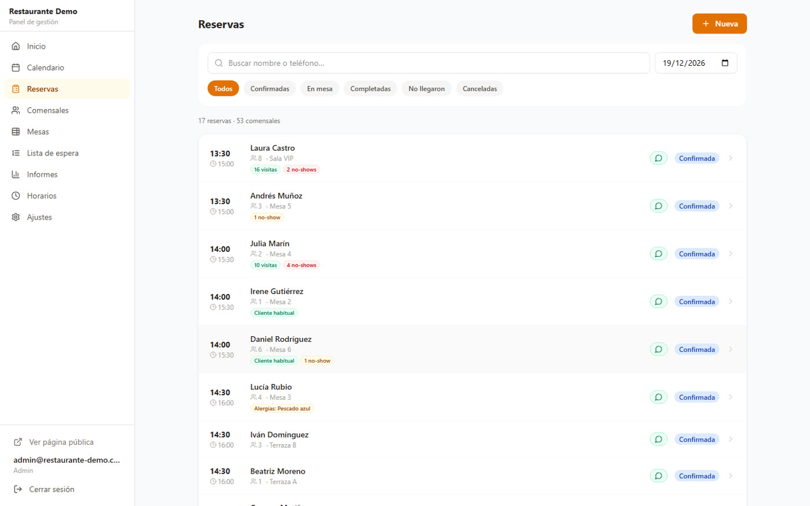
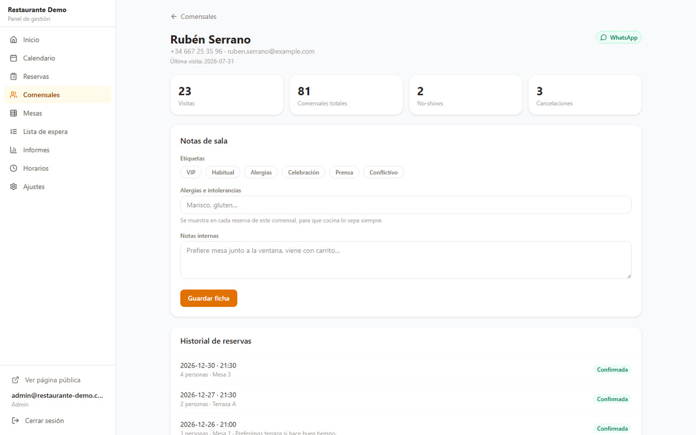
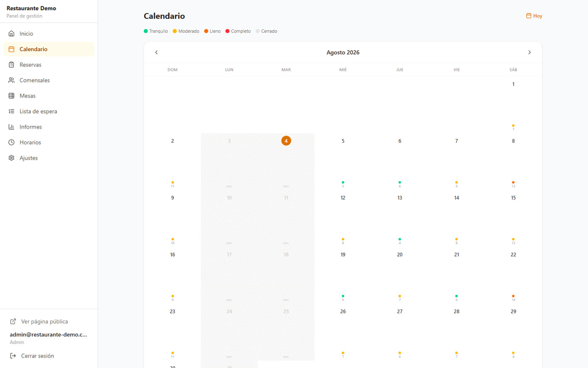
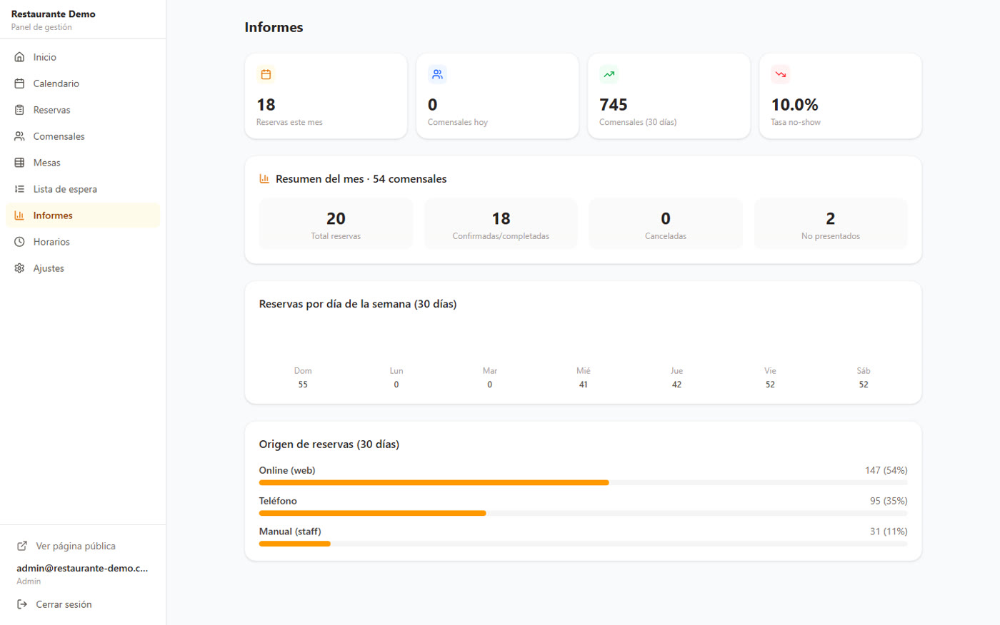
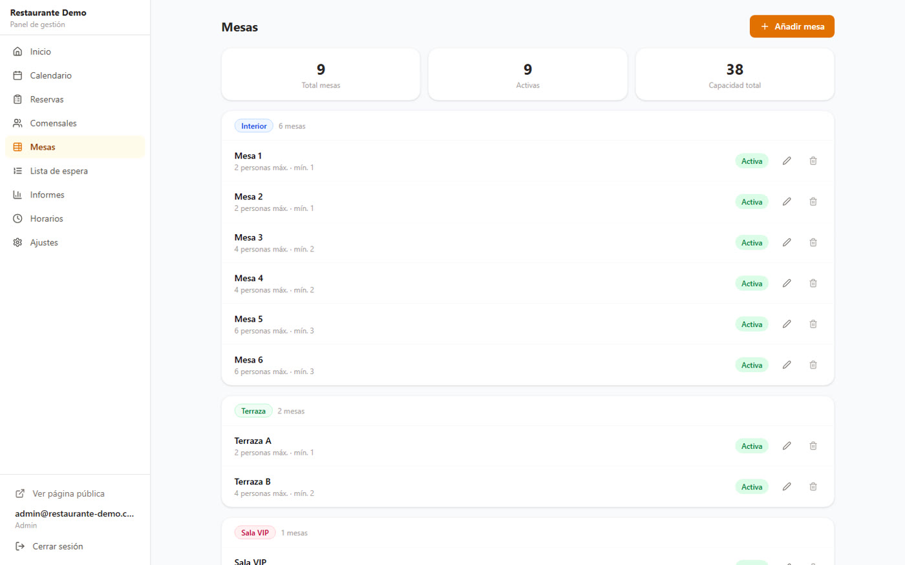
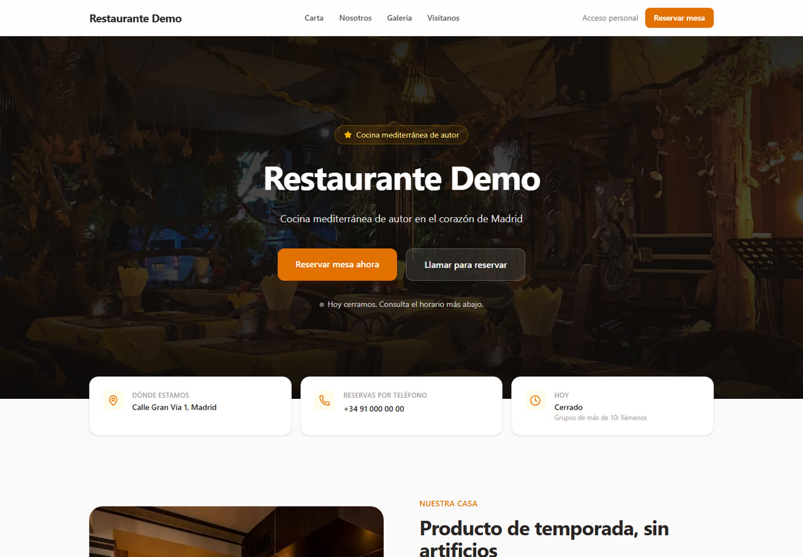

Te montamos la web de tu restaurante y, dentro, un sistema de reservas que trabaja solo: sin dobles reservas, reconociendo a tus clientes habituales y controlando el ritmo de entrada a cocina.
Vídeo de 1:45 · Grabado sobre la aplicación real, con datos de un restaurante de ejemplo
Puedes contratar solo el sistema de reservas si ya tienes web. O las dos, que es donde se nota.
No son maquetas: son pantallas del sistema funcionando con datos de un restaurante de ejemplo.






La garantía no está en el programa, está en la base de datos. Aunque entren dos reservas a la vez, solo una se queda con la mesa.
Al abrir la reserva ves que es su décima visita, que es alérgico al marisco y que ya te dejó dos mesas vacías.
Si un grupo no cabe en una mesa, junta varias de la misma sala automáticamente.
Limita cuántos comensales entran en cada franja. El maître puede saltárselo cuando hace falta.
Si cierras a la una, las reservas de las 00:30 salen en el servicio correcto y no en el día siguiente.
Confirmar, recordar o avisar de que se ha liberado mesa, con el mensaje ya escrito.
Siete días gratis, con tus mesas y tus horarios cargados. Si no te encaja, lo dejas y no pasa nada.
Entrar en la demo